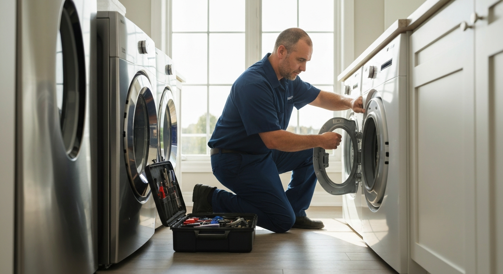
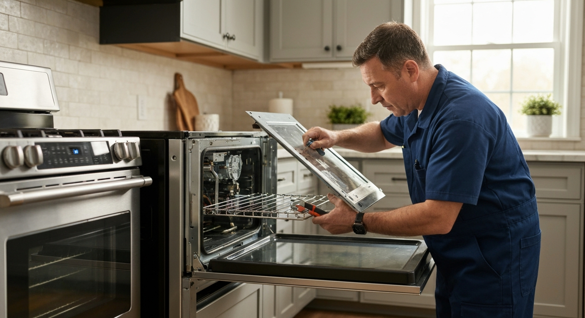
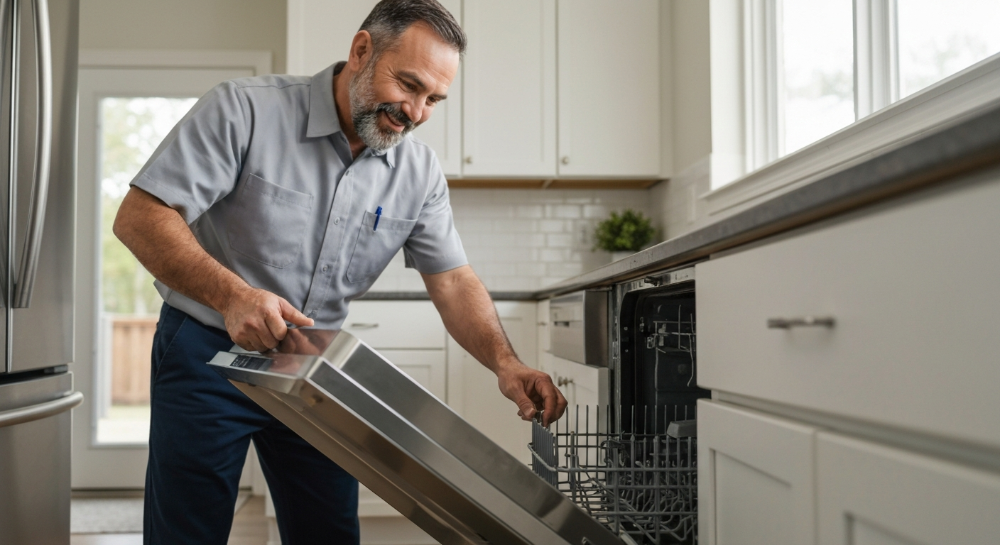

Fast, reliable appliance repair across Guelph. Most major brands serviced — same-day appointments available.
Not spinning, leaking, won't drain, making noise — we fix all major Washer brands including front and top loaders.
Not heating, not tumbling, taking too long — gas and electric dryer repair with most parts in stock.
Not cooling, ice maker issues, compressor problems — fridge repair before you lose a fridge full of food.
Not cleaning, not draining, door latch issues, control panel faults — dishwasher repair for all brands.
Burners not igniting, oven not heating to temperature, control board issues — gas and electric stove repair.
Chest and upright freezers, microwaves, range hoods — we service a wide range of household appliances.



Same-day and next-day appointments available in Guelph
Samsung, LG, Whirlpool, Bosch, GE, Maytag and more
Common parts on our truck — most repairs completed first visit
Guelph-based technicians, not a national call centre
A broken appliance disrupts daily life immediately — a failed washer means a laundromat run, a broken fridge means food spoilage, a non-functional stove means takeout. Fast, competent repair by someone who carries the right parts matters enormously. We book same-day and next-day appointments throughout Guelph and carry the most common parts for the major brands, completing most repairs on the first visit.
Repair vs. replace is the question homeowners ask most often. The general rule: if the repair cost is less than 50% of a new equivalent appliance and the appliance is under 8 years old, repair is usually the better financial decision. Appliances also improve with age in the sense that manufacturing defects (infant mortality) are behind you — a 4-year-old washer that needs a pump replacement is likely to run well for another 8 years. We provide honest repair-vs-replace assessments with no pressure toward either option.
Front-load washers are the most common repair in Guelph homes. They're generally efficient and effective, but they have known weak points: door boot seals, bearings, and pump filters accumulate issues over time. Mold around the door seal is a maintenance issue (leaving the door open between cycles prevents it), not a repair issue. If your front-loader is rumbling, vibrating excessively, or leaking, diagnosis is straightforward.
Refrigerators are the most expensive appliance to lose — not just the repair cost, but the food loss. Common issues include failed defrost heaters causing ice buildup in the freezer compartment (leading to warm fridge temps), failed start relays on the compressor, and dirty condenser coils causing insufficient cooling. Most of these are straightforward repairs once diagnosed.
We service all major brands: Samsung, LG, Whirlpool, Maytag, Kenmore, Bosch, GE, Frigidaire, Electrolux, and Miele. For some luxury brands, parts have longer lead times — we'll advise you honestly when that's the case.
We serve Guelph, Fergus, Elora, Rockwood, Cambridge, and all of Wellington County.
We provide appliance repair services throughout Guelph and the surrounding region:
A service call in Guelph typically costs $80–$120, which is applied toward the repair if you proceed. Repairs themselves run $120–$400 for most common issues — a dishwasher pump replacement might be $180, a dryer heating element $150, a fridge start relay $120. We quote the full repair cost before proceeding.
Generally yes, if the washer is under 8–10 years old and the repair is under $300. A new washer costs $700–$1,500 installed. Common washer repairs like pump replacement, bearing replacement (for rumbling), and control board issues are well within the repair-worth-it zone for most machines.
We offer same-day and next-day service in Guelph for most appliance types. We carry common parts on the truck, so many repairs are completed on the first visit. For less common parts, we typically have a 1–3 business day wait.
We service all major brands: Samsung, LG, Whirlpool, Maytag, Kenmore, Bosch, GE, Frigidaire, Electrolux, KitchenAid, Amana, and Miele. For some European brands like Miele and Bosch, parts may have longer lead times — we'll advise you upfront.
The most common causes are dirty condenser coils (a $0 fix if you clean them), a failed start relay on the compressor (a $80–$120 repair), frost buildup in the evaporator from a failed defrost heater, or a refrigerant leak (more expensive). We diagnose on the first visit.
Yes — Samsung is one of our most-serviced brands. Common Samsung washer issues we fix include the nE or SE error code (vibration sensor), dc error (out of balance), and 4E/4C (water supply) issues. Samsung parts are generally available within 1–2 days if we don't have them on the truck.
Contact us today for a free, no-obligation quote for appliance repair services in Guelph.